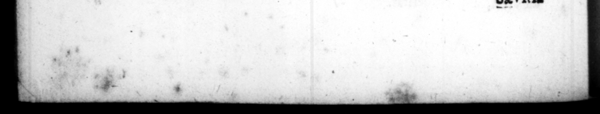

- Honor Onnſlatus b niegatus, et Gus. 5 nt * favor apud homiContumeliæ per ludum illatz. Diſcrimina, que paſſus eft, Initium Imperii Claudii. Geſta per eum in initio principatus. . II Honores per eum ſpreti, et civilia geſta. 12 Inſidia et con jurationes, contra eum Lac, | 13 nes. 6 Conſulatus, et geſta per eum. 7 9 Conſulatus et geſta in eis. 44 Varietas in cognoſcendo. 15 Officium Cenſmæ, et geſta per eum. 16 | Expedirio Britannica, et triumÞ . ˖ = urbis, et annone. 18 Vacationes conceſſæ. 19 Opera publica per eum 20 Spectacula per eum edita. 21 Correctio, et inſtitutio ceremoniarum et morum, civilium & militarium. 232 nſtituta et ſanctiones. 23 Indulgentia, et liberalitas. 24 Quzdam civilla geſta, et ordiRationes. 25 Sponſz, et uxores. 26 Liberi, et generi. 27 Liberti ab eo priecipue dilecti. 28 Maleticia, inſtinctu libertorum, et uxorum, ab eo perpetrata. 29 Forma et ſtatura. 30 Valetudo. 22 31 Convivia, et alia geſta. - 32 Cibus, porus, ſomnus et Juxuria, liber quoque de aleæ luſu. 8 33 Seevitia, et crudelitas. 34 Timiditas et diffidentia. 35 Timor inſid iarum, etalia geſta. 36 Pena cb leves ſuſpiciones innocentibus inflictæ. 37 Iracundia, et ſtultitia. 38 Oblivio et alia geſta. 29 Sermones, et Orationes. 40 Libri et opuſcula per eum edita. 41 Studium in literis Græcis. 42 Ponitentia de matrimonio A. grippinz, et adoptione Neronis. 1 Teſtamentum, et mors, $4 ol _- * * en. * "> INDEX HIST. r Tiberium * 2 * o Lg 2 * * ” 0 * * , 3 A * » = 3 N Prelagia de morte. 46 Bren Cn. Domitius Neronis-proavus. » Domitius Neronis avus. patre Neronis. Vatus et -infantia Neronis, præſagia quædam. Pueritia et geſta in ea. Imperium Neronis. per eum in init io princio Oo 3 aw; patus. 9 Civilia geſta. 10 Spectacula per eum editay et liberalitas in r 11 Spectacula unde ſpe&averit, & alia geſta* RL + Magnificentia in excipiendo Tiridate Armenic. 13 anum geminum claudit. 14 os in jure dicendo, 15 Afffictio Clriſtianorum. 16 Cautum iu falſarios pro t = tis. 17 Imperium ſub Nerone non auctum. 18 Expeditiones Alexandriz, et Achajæ per eum ſuſceptzz. 19 Studium in cantu, et muſica. 20 Tragoedias cantat. 2 Studium aurigandi, et citharizandi. 22 Certamina exercituum, ac timor in eo genere. 23 Obedientia in dictis certaminibus. 8 24 Redi tus & Gracia, et triumphi. 5 Rapinæ, et alia ſoelera. | Comecſlationes, et epulæ. 27 Stupra, matris amor inceſtus. 28 Pudicitia paſſim proſtrata. 29 Prodigalitas, ac divitiarum profuſio. * 1 fact: 27 Opera publica per eum 8 Rapinæ, exjoifiones, et ſacrilegia. 32 Parricidium in Claudium, et Britannicum. 32 Parricidium in matrem, et amitam, _ Ft Parricidium in uxores, ac ibi ooujunctiſimos. 37
